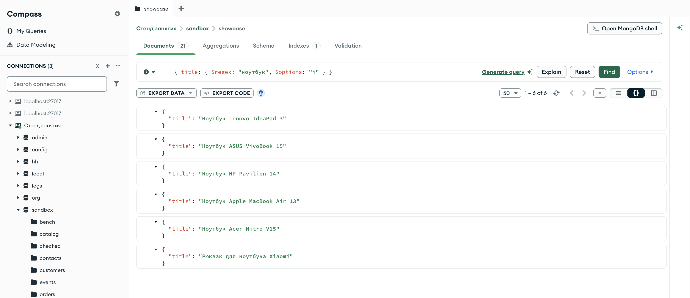
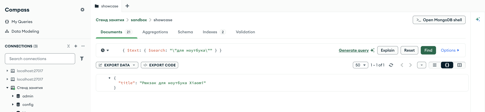
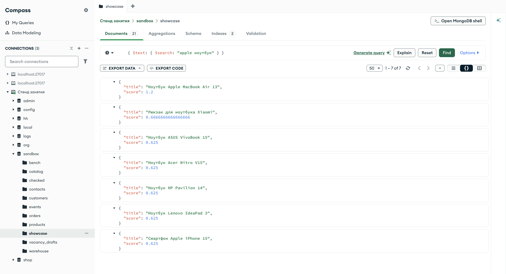
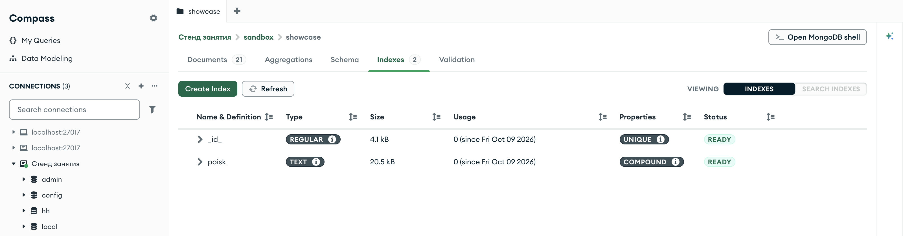
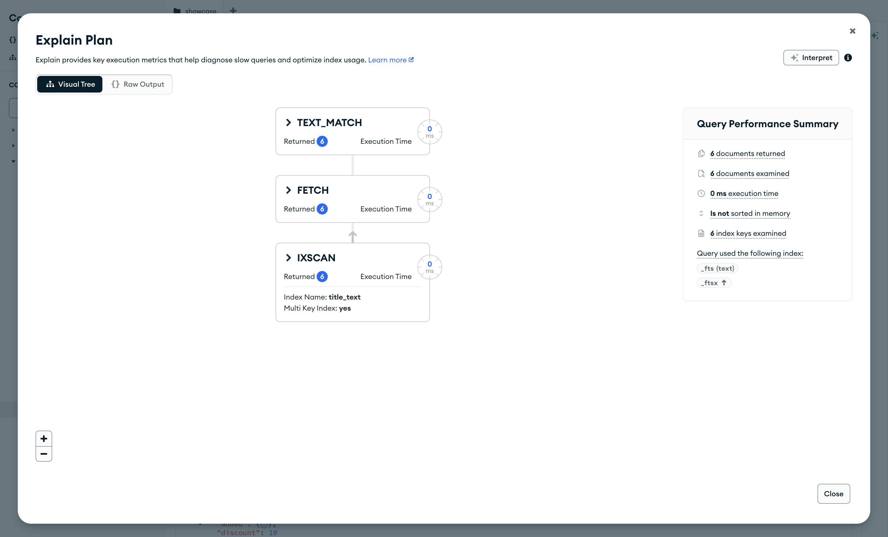

Справочник по MongoDB · модуль 3 · форма данных и скорость
3.4
Текстовый поиск:
$text и $search
В этой главе разобран поиск по словам: текстовый индекс делит строки на слова, приводит их к основе и находит документы по слову в любой форме. На копии товаров магазина разобраны оператор $text, поиск нескольких слов, фразы и слова с исключением, оценка совпадения для сортировки результатов, язык индекса и текстовый индекс по нескольким полям с весами.
- Категория
- Форма данных
- Уровень
- Начальный
- Связанные темы
- Текстовые шаблоны
$regex(глава 2.7), индексы (глава 3.2), план запроса (глава 3.3) - Зачем это знать
- Искать по словам в любой форме в названиях и описаниях
Как запускать примеры этой главы
docker compose run --rm reset или скрипт из главы 1.0, §6.mongodb-glava-3.4-python.zip, 61 КБmongodb-glava-3.4-ruby.zip, 61 КБmongodb-glava-3.4-go.zip, 66 КБmongodb-glava-3.4-cpp.zip, 64 КБ — все примеры главы готовыми программами, базы и стенд в Docker. В README.md — запуск в Docker, если Compass нет или он не подключается, и на установленном сервере с Compass, а также что должна напечатать каждая программа.lessons/ch3_4.py — пример вставляется в конец файлаlessons/ch3_4.rb — пример вставляется в конец файлаlessons/ch3_4.go — пример внутрь скобок в конце main, функции и типы — выше mainlessons/ch3_4.cpp — пример внутрь скобок в конце main, функции — выше maincd lessons, затем python ch3_4.pycd lessons, затем python3 ch3_4.py · в Docker: docker compose run --rm python lessons/ch3_4.pycd lessons, затем ruby ch3_4.rb · в Docker: docker compose run --rm ruby lessons/ch3_4.rbcd lessons, затем go run ch3_4.go · в Docker: docker compose run --rm go lessons/ch3_4.gocd lessons, затем g++ -std=c++17 ch3_4.cpp -o prog $(pkg-config --cflags --libs libmongocxx1) && ./prog · в Docker: docker compose run --rm cpp lessons/ch3_4.cpp§1Поиск слова шаблоном
Покупатель вводит в строку поиска магазина «ноутбуки». В главе 2.7 строки искали шаблоном $regex, но шаблон сравнивает символы: он ищет точную последовательность букв с учётом регистра. Слово «ноутбуки» не совпадает ни с «Ноутбук» в начале названия, ни с «ноутбука» в названии рюкзака, хотя покупатель ищет именно эти товары.
Текстовый индекс главы строится на копии товаров в песочнице, коллекции showcase (sandbox.showcase) из заготовки главы: база shop остаётся без новых индексов. Первый пример копирует в неё товары магазина и считает совпадения трёх шаблонов.
showcase.drop() showcase.insert_many(products.find()) print("товаров в копии:", showcase.count_documents({})) print("ноутбук: ", showcase.count_documents({"title": {"$regex": "ноутбук"}})) print("ноутбук, без регистра:", showcase.count_documents({"title": {"$regex": "ноутбук", "$options": "i"}})) print("ноутбуки, без регистра:", showcase.count_documents({"title": {"$regex": "ноутбуки", "$options": "i"}}))
showcase.drop(); std::vector<bsoncxx::document::value> all; for (auto&& doc : products.find(make_document())) all.emplace_back(doc); showcase.insert_many(all); std::cout << "товаров в копии: " << showcase.count_documents(make_document()) << std::endl; std::cout << "ноутбук: " << showcase.count_documents(make_document(kvp("title", make_document(kvp("$regex", "ноутбук"))))) << std::endl; std::cout << "ноутбук, без регистра: " << showcase.count_documents(make_document(kvp("title", make_document(kvp("$regex", "ноутбук"), kvp("$options", "i"))))) << std::endl; std::cout << "ноутбуки, без регистра: " << showcase.count_documents(make_document(kvp("title", make_document(kvp("$regex", "ноутбуки"), kvp("$options", "i"))))) << std::endl;
showcase.Drop(ctx) var all []bson.D cursor, _ := products.Find(ctx, bson.D{}) cursor.All(ctx, &all) docs := make([]any, len(all)) for i := range all { docs[i] = all[i] } showcase.InsertMany(ctx, docs) n, _ := showcase.CountDocuments(ctx, bson.D{}) fmt.Println("товаров в копии:", n) word, _ := showcase.CountDocuments(ctx, bson.D{{Key: "title", Value: bson.D{{Key: "$regex", Value: "ноутбук"}}}}) anyCase, _ := showcase.CountDocuments(ctx, bson.D{{Key: "title", Value: bson.D{{Key: "$regex", Value: "ноутбук"}, {Key: "$options", Value: "i"}}}}) plural, _ := showcase.CountDocuments(ctx, bson.D{{Key: "title", Value: bson.D{{Key: "$regex", Value: "ноутбуки"}, {Key: "$options", Value: "i"}}}}) fmt.Println("ноутбук: ", word) fmt.Println("ноутбук, без регистра:", anyCase) fmt.Println("ноутбуки, без регистра:", plural)
showcase.drop showcase.insert_many(products.find.to_a) puts "товаров в копии: " + showcase.count_documents({}).to_s puts "ноутбук: " + showcase.count_documents({ "title" => { "$regex" => "ноутбук" } }).to_s puts "ноутбук, без регистра: " + showcase.count_documents({ "title" => { "$regex" => "ноутбук", "$options" => "i" } }).to_s puts "ноутбуки, без регистра: " + showcase.count_documents({ "title" => { "$regex" => "ноутбуки", "$options" => "i" } }).to_s
товаров в копии: 21 ноутбук: 1 ноутбук, без регистра: 6 ноутбуки, без регистра: 0
товаров в копии: 21 ноутбук: 1 ноутбук, без регистра: 6 ноутбуки, без регистра: 0
товаров в копии: 21 ноутбук: 1 ноутбук, без регистра: 6 ноутбуки, без регистра: 0
товаров в копии: 21 ноутбук: 1 ноутбук, без регистра: 6 ноутбуки, без регистра: 0
Шаблон ноутбук нашёл один товар — «Рюкзак для ноутбука Xiaomi»: в пяти названиях ноутбуков слово начинается с заглавной буквы. Без учёта регистра ($options: "i") найдено шесть товаров. Шаблон ноутбуки не нашёл ничего: такой последовательности букв нет ни в одном названии. Перебирать окончания в шаблоне вручную неудобно, а шаблон без привязки к началу строки не может использовать индекс (глава 2.7) и проверяет каждый документ.

sandbox.showcase, шаблон ноутбук без учёта регистраСчётчик 1 – 6 of 6: пять ноутбуков и рюкзак. На вкладке Indexes — 1, у копии только индекс _id_.
§2Текстовый индекс и $text
Текстовый индекс хранит не строки целиком, а отдельные слова. При построении сервер делит строку на слова по пробелам и знакам препинания, переводит их в нижний регистр, отбрасывает служебные слова — предлоги, союзы — и приводит каждое слово к основе: «ноутбуки», «ноутбука» и «Ноутбук» дают одну и ту же запись «ноутбук». Правила деления и приведения к основе зависят от языка, его задаёт параметр default_language.
Слово запроса обрабатывается по тем же правилам, поэтому «ноутбуки» находит и «Ноутбук», и «ноутбука». Поиск по текстовому индексу записывает оператор $text; он стоит в фильтре на месте имени поля, а искомые слова — строка в его параметре $search. Поле в $text не указывается: оператор ищет по тем полям, по которым построен текстовый индекс коллекции.
Текстовый индекс создаёт тот же create_index, что и обычный: вместо направления у поля указывается "text", язык — именованный аргумент default_language.
Текстовый индекс создаёт тот же indexes.create_one: вместо направления у поля указывается "text", язык — параметр default_language:. Ключ текстового индекса сервер хранит в своём виде — {"_fts": "text", "_ftsx": 1}, поэтому имя индекса пример находит в списке индексов по полю _fts.
Текстовый индекс создаёт тот же Indexes().CreateOne: вместо направления у поля указывается "text", язык задаёт SetDefaultLanguage в параметрах индекса. Название документа берётся из текущего документа курсора: cursor.Current.Lookup("title").
Текстовый индекс создаёт тот же create_index: вместо направления у поля указывается "text", язык задаёт default_language объекта параметров индекса.
Пример создаёт текстовый индекс по названию на русском языке и ищет «ноутбуки». Результат отсортирован по названию: без сортировки документы идут в порядке записей индекса.
name = showcase.create_index([("title", "text")], default_language="russian") print("создан индекс:", name) for doc in showcase.find({"$text": {"$search": "ноутбуки"}}, {"_id": 0, "title": 1}).sort("title", 1): print(doc["title"])
mongocxx::options::index russian; russian.default_language("russian"); auto created = showcase.create_index(make_document(kvp("title", "text")), russian); std::cout << "создан индекс: " << created.view()["name"].get_string().value << std::endl; mongocxx::options::find by_title; by_title.sort(make_document(kvp("title", 1))); for (auto&& doc : showcase.find(make_document(kvp("$text", make_document(kvp("$search", "ноутбуки")))), by_title)) { std::cout << doc["title"].get_string().value << std::endl; }
name, _ := showcase.Indexes().CreateOne(ctx, mongo.IndexModel{ Keys: bson.D{{Key: "title", Value: "text"}}, Options: options.Index().SetDefaultLanguage("russian")}) fmt.Println("создан индекс:", name) cursor, _ := showcase.Find(ctx, bson.D{{Key: "$text", Value: bson.D{{Key: "$search", Value: "ноутбуки"}}}}, options.Find().SetSort(bson.D{{Key: "title", Value: 1}})) for cursor.Next(ctx) { fmt.Println(cursor.Current.Lookup("title").StringValue()) }
showcase.indexes.create_one({ "title" => "text" }, default_language: "russian") # ключ текстового индекса хранится как _fts, поэтому индекс ищется в списке по этому полю puts "создан индекс: " + showcase.indexes.find { |ix| ix["key"].key?("_fts") }["name"] showcase.find({ "$text" => { "$search" => "ноутбуки" } }, projection: { "_id" => 0, "title" => 1 }) .sort({ "title" => 1 }) .each { |doc| puts doc["title"] }
создан индекс: title_text Ноутбук ASUS VivoBook 15 Ноутбук Acer Nitro V15 Ноутбук Apple MacBook Air 13 Ноутбук HP Pavilion 14 Ноутбук Lenovo IdeaPad 3 Рюкзак для ноутбука Xiaomi
создан индекс: title_text Ноутбук ASUS VivoBook 15 Ноутбук Acer Nitro V15 Ноутбук Apple MacBook Air 13 Ноутбук HP Pavilion 14 Ноутбук Lenovo IdeaPad 3 Рюкзак для ноутбука Xiaomi
создан индекс: title_text Ноутбук ASUS VivoBook 15 Ноутбук Acer Nitro V15 Ноутбук Apple MacBook Air 13 Ноутбук HP Pavilion 14 Ноутбук Lenovo IdeaPad 3 Рюкзак для ноутбука Xiaomi
создан индекс: title_text Ноутбук ASUS VivoBook 15 Ноутбук Acer Nitro V15 Ноутбук Apple MacBook Air 13 Ноутбук HP Pavilion 14 Ноутбук Lenovo IdeaPad 3 Рюкзак для ноутбука Xiaomi
Индекс получил имя title_text — поле и слово text вместо направления. Найдены все шесть товаров, которые нашёл шаблон без учёта регистра в §1, хотя слово запроса стоит в другой форме: пять ноутбуков и рюкзак.
{ $text: { $search: "ноутбуки" } }, сортировка по названиюОператор $text в поле фильтра записывается так же, как в коде. Найдены те же шесть товаров, что и шаблоном без учёта регистра, но по слову в другой форме. Счётчик вкладки Indexes — 2: добавился title_text.
§3Несколько слов, фраза, исключение
Строка $search может содержать несколько слов, и у некоторых знаков в ней особый смысл:
- слова через пробел соединяются по «или»: документ подходит, если в нём есть хотя бы одно слово;
- слова в двойных кавычках — фраза: документ подходит, если в нём есть эта последовательность слов;
- минус перед словом — исключение: документ с этим словом не подходит.
Пример выполняет пять поисков и печатает найденные названия через запятую: два слова, фразу «для ноутбука», «ноутбук» без рюкзаков, часть слова «ноут» и служебное слово «для».
Фраза записана в строке Python в одинарных кавычках, чтобы двойные кавычки фразы вошли в строку как есть.
Фраза записана в строке Ruby в одинарных кавычках, чтобы двойные кавычки фразы вошли в строку как есть.
Двойные кавычки фразы внутри строки Go экранированы обратной косой чертой: "\"для ноутбука\"".
Двойные кавычки фразы внутри строки C++ экранированы обратной косой чертой: "\"для ноутбука\"". Для выравнивания столбца пример считает буквы: в кодировке UTF-8 буква кириллицы занимает два байта, и size() строки возвращает число байтов.
for search in ["мышь клавиатура", '"для ноутбука"', "ноутбук -рюкзак", "ноут", "для"]: found = [doc["title"] for doc in showcase.find({"$text": {"$search": search}}).sort("title", 1)] print(search.ljust(16), "→", ", ".join(found) or "ничего")
mongocxx::options::find by_title; by_title.sort(make_document(kvp("title", 1))); for (std::string search : {"мышь клавиатура", "\"для ноутбука\"", "ноутбук -рюкзак", "ноут", "для"}) { std::string found; for (auto&& doc : showcase.find(make_document(kvp("$text", make_document(kvp("$search", search)))), by_title)) { if (!found.empty()) found += ", "; found += std::string{doc["title"].get_string().value}; } size_t letters = 0; // в UTF-8 буква кириллицы занимает два байта for (unsigned char c : search) letters += (c & 0xC0) != 0x80; std::cout << search << std::string(16 - std::min<size_t>(16, letters), ' ') << " → " << (found.empty() ? "ничего" : found) << std::endl; }
for _, search := range []string{"мышь клавиатура", "\"для ноутбука\"", "ноутбук -рюкзак", "ноут", "для"} { cursor, _ := showcase.Find(ctx, bson.D{{Key: "$text", Value: bson.D{{Key: "$search", Value: search}}}}, options.Find().SetSort(bson.D{{Key: "title", Value: 1}})) found := []string{} for cursor.Next(ctx) { found = append(found, cursor.Current.Lookup("title").StringValue()) } line := strings.Join(found, ", ") if line == "" { line = "ничего" } fmt.Printf("%-16s → %s\n", search, line) }
["мышь клавиатура", '"для ноутбука"', "ноутбук -рюкзак", "ноут", "для"].each do |search| found = showcase.find({ "$text" => { "$search" => search } }).sort({ "title" => 1 }).map { |doc| doc["title"] } puts search.ljust(16) + " → " + (found.empty? ? "ничего" : found.join(", ")) end
мышь клавиатура → Клавиатура Keychron K2, Мышь Logitech MX Master 3S "для ноутбука" → Рюкзак для ноутбука Xiaomi ноутбук -рюкзак → Ноутбук ASUS VivoBook 15, Ноутбук Acer Nitro V15, Ноутбук Apple MacBook Air 13, Ноутбук HP Pavilion 14, Ноутбук Lenovo IdeaPad 3 ноут → ничего для → ничего
мышь клавиатура → Клавиатура Keychron K2, Мышь Logitech MX Master 3S "для ноутбука" → Рюкзак для ноутбука Xiaomi ноутбук -рюкзак → Ноутбук ASUS VivoBook 15, Ноутбук Acer Nitro V15, Ноутбук Apple MacBook Air 13, Ноутбук HP Pavilion 14, Ноутбук Lenovo IdeaPad 3 ноут → ничего для → ничего
мышь клавиатура → Клавиатура Keychron K2, Мышь Logitech MX Master 3S "для ноутбука" → Рюкзак для ноутбука Xiaomi ноутбук -рюкзак → Ноутбук ASUS VivoBook 15, Ноутбук Acer Nitro V15, Ноутбук Apple MacBook Air 13, Ноутбук HP Pavilion 14, Ноутбук Lenovo IdeaPad 3 ноут → ничего для → ничего
мышь клавиатура → Клавиатура Keychron K2, Мышь Logitech MX Master 3S "для ноутбука" → Рюкзак для ноутбука Xiaomi ноутбук -рюкзак → Ноутбук ASUS VivoBook 15, Ноутбук Acer Nitro V15, Ноутбук Apple MacBook Air 13, Ноутбук HP Pavilion 14, Ноутбук Lenovo IdeaPad 3 ноут → ничего для → ничего
«мышь клавиатура» нашла оба товара — по одному слову в каждом. Фраза «для ноутбука» нашла только рюкзак: в нём эти слова стоят подряд. «ноутбук -рюкзак» нашёл пять ноутбуков без рюкзака. «ноут» не нашёл ничего: текстовый индекс ищет слова целиком, начало слова в нём не ищется — для этого остаётся шаблон $regex с ^. «для» тоже ничего не нашёл: служебные слова в индекс не попали.

"\"для ноутбука\""Кавычки фразы внутри строки поиска экранированы обратной косой чертой, как в коде на Go и C++. Найден один документ — рюкзак.
§4Оценка совпадения
При поиске нескольких слов одни документы подходят лучше других. Для каждого найденного документа сервер вычисляет оценку совпадения — число, которое больше, когда совпало больше слов запроса и когда совпавшее слово занимает большую часть поля. Оценку получают в проекции выражением {"$meta": "textScore"} и по нему же сортируют результат, лучшие совпадения — первыми. Имя поля для оценки выбирается любое, в примере — score.
Пример ищет «apple ноутбук» и печатает оценку с тремя знаками после запятой. Документы с равной оценкой упорядочены по названию — вторым ключом сортировки.
cursor = showcase.find({"$text": {"$search": "apple ноутбук"}}, {"_id": 0, "title": 1, "score": {"$meta": "textScore"}}) for doc in cursor.sort([("score", {"$meta": "textScore"}), ("title", 1)]): print(f"{doc['score']:.3f}", doc["title"])
mongocxx::options::find by_score; by_score.projection(make_document(kvp("_id", 0), kvp("title", 1), kvp("score", make_document(kvp("$meta", "textScore"))))); by_score.sort(make_document(kvp("score", make_document(kvp("$meta", "textScore"))), kvp("title", 1))); for (auto&& doc : showcase.find(make_document(kvp("$text", make_document(kvp("$search", "apple ноутбук")))), by_score)) { std::cout << std::fixed << std::setprecision(3) << doc["score"].get_double().value << " " << doc["title"].get_string().value << std::endl; }
cursor, _ := showcase.Find(ctx, bson.D{{Key: "$text", Value: bson.D{{Key: "$search", Value: "apple ноутбук"}}}}, options.Find(). SetProjection(bson.D{{Key: "_id", Value: 0}, {Key: "title", Value: 1}, {Key: "score", Value: bson.D{{Key: "$meta", Value: "textScore"}}}}). SetSort(bson.D{{Key: "score", Value: bson.D{{Key: "$meta", Value: "textScore"}}}, {Key: "title", Value: 1}})) for cursor.Next(ctx) { fmt.Printf("%.3f %s\n", cursor.Current.Lookup("score").Double(), cursor.Current.Lookup("title").StringValue()) }
showcase.find({ "$text" => { "$search" => "apple ноутбук" } }, projection: { "_id" => 0, "title" => 1, "score" => { "$meta" => "textScore" } }) .sort({ "score" => { "$meta" => "textScore" }, "title" => 1 }) .each { |doc| puts format("%.3f", doc["score"]) + " " + doc["title"] }
1.200 Ноутбук Apple MacBook Air 13 0.667 Рюкзак для ноутбука Xiaomi 0.625 Ноутбук ASUS VivoBook 15 0.625 Ноутбук Acer Nitro V15 0.625 Ноутбук HP Pavilion 14 0.625 Ноутбук Lenovo IdeaPad 3 0.625 Смартфон Apple iPhone 15
1.200 Ноутбук Apple MacBook Air 13 0.667 Рюкзак для ноутбука Xiaomi 0.625 Ноутбук ASUS VivoBook 15 0.625 Ноутбук Acer Nitro V15 0.625 Ноутбук HP Pavilion 14 0.625 Ноутбук Lenovo IdeaPad 3 0.625 Смартфон Apple iPhone 15
1.200 Ноутбук Apple MacBook Air 13 0.667 Рюкзак для ноутбука Xiaomi 0.625 Ноутбук ASUS VivoBook 15 0.625 Ноутбук Acer Nitro V15 0.625 Ноутбук HP Pavilion 14 0.625 Ноутбук Lenovo IdeaPad 3 0.625 Смартфон Apple iPhone 15
1.200 Ноутбук Apple MacBook Air 13 0.667 Рюкзак для ноутбука Xiaomi 0.625 Ноутбук ASUS VivoBook 15 0.625 Ноутбук Acer Nitro V15 0.625 Ноутбук HP Pavilion 14 0.625 Ноутбук Lenovo IdeaPad 3 0.625 Смартфон Apple iPhone 15
Первым стоит «Ноутбук Apple MacBook Air 13» с оценкой 1,2: в нём оба слова запроса. Остальные содержат одно слово. Рюкзак (0,667) оценён выше ноутбуков других марок (0,625): после удаления служебного слова в его названии три слова, а в названиях ноутбуков — четыре, и одно совпавшее слово составляет большую долю. «Смартфон Apple iPhone 15» найден по слову «apple». Названия брендов в индексе есть, потому что индекс строится по всему названию.

{ $meta: "textScore" }Поле score Compass показывает с полной точностью: у рюкзака — 0.6666666666666666, в примере оно округлено до трёх знаков. Порядок тот же: MacBook, рюкзак, затем пять товаров с оценкой 0.625 по названию.
§5Язык индекса и язык запроса
Правила деления на слова и приведения к основе у каждого языка свои. Язык индекса задаётся при создании (default_language) и определяет, какие слова попадут в индекс. Язык запроса задаёт параметр $language оператора $text; по умолчанию он совпадает с языком индекса. Значение "none" отключает обработку: слова запроса только переводятся в нижний регистр, без приведения к основе и без отбрасывания служебных слов.
Пример сравнивает поиск на русском и с "none" по индексу из §2, построенному на русском.
for search, language in [("ноутбуки", "russian"), ("ноутбуки", "none"), ("ноутбук", "none"), ("для", "none")]: count = showcase.count_documents({"$text": {"$search": search, "$language": language}}) print(f"{search} ({language}):", count)
std::vector<std::pair<std::string, std::string>> queries{
{"ноутбуки", "russian"}, {"ноутбуки", "none"}, {"ноутбук", "none"}, {"для", "none"}};
for (const auto& [search, language] : queries) {
auto count = showcase.count_documents(make_document(kvp("$text", make_document(
kvp("$search", search), kvp("$language", language)))));
std::cout << search << " (" << language << "): " << count << std::endl;
}
for _, pair := range [][2]string{{"ноутбуки", "russian"}, {"ноутбуки", "none"}, {"ноутбук", "none"}, {"для", "none"}} { count, _ := showcase.CountDocuments(ctx, bson.D{{Key: "$text", Value: bson.D{ {Key: "$search", Value: pair[0]}, {Key: "$language", Value: pair[1]}}}}) fmt.Printf("%s (%s): %d\n", pair[0], pair[1], count) }
[["ноутбуки", "russian"], ["ноутбуки", "none"], ["ноутбук", "none"], ["для", "none"]].each do |search, language| count = showcase.count_documents({ "$text" => { "$search" => search, "$language" => language } }) puts "#{search} (#{language}): #{count}" end
ноутбуки (russian): 6 ноутбуки (none): 0 ноутбук (none): 6 для (none): 0
ноутбуки (russian): 6 ноутбуки (none): 0 ноутбук (none): 6 для (none): 0
ноутбуки (russian): 6 ноутбуки (none): 0 ноутбук (none): 6 для (none): 0
ноутбуки (russian): 6 ноутбуки (none): 0 ноутбук (none): 6 для (none): 0
С языком "none" «ноутбуки» не находит ничего: в индексе лежит основа «ноутбук», а слово запроса к основе не приведено. «ноутбук» с "none" находит все шесть товаров: слово запроса и так совпадает с основой. «для» не находится и с "none": язык запроса меняет обработку запроса, а служебное слово отброшено ещё при построении индекса. Поэтому язык индекса выбирают по языку данных при создании, а $language в запросе меняют редко.
§6Индекс по нескольким полям и веса
Текстовый индекс можно построить по нескольким полям сразу: тогда $text ищет слово во всех этих полях. У каждого поля можно задать вес — множитель оценки совпадения: совпадение в поле с весом 10 даёт оценку в десять раз больше, чем такое же совпадение в поле с весом 1. Без весов у всех полей вес 1.
Текстовый индекс у коллекции может быть только один. Поэтому пример удаляет title_text и строит индекс poisk по названию (вес 10) и категории (вес 1), затем ищет «смартфоны». Последним шагом пример пробует создать второй текстовый индекс, по бренду.
Веса передаются словарём в именованном аргументе weights, своё имя индекса — аргументом name.
Веса передаются хешем в параметре weights:, своё имя индекса — параметром name:.
Веса задаёт SetWeights, своё имя индекса — SetName в той же цепочке параметров.
Веса задаёт метод weights объекта параметров, своё имя — name. Документ весов лежит в отдельной переменной: объект параметров хранит ссылку на него.
from pymongo.errors import OperationFailure showcase.drop_index("title_text") showcase.create_index([("title", "text"), ("category", "text")], weights={"title": 10, "category": 1}, default_language="russian", name="poisk") cursor = showcase.find({"$text": {"$search": "смартфоны"}}, {"_id": 0, "title": 1, "score": {"$meta": "textScore"}}) for doc in cursor.sort([("score", {"$meta": "textScore"}), ("title", 1)]): print(f"{doc['score']:.3f}", doc["title"]) try: showcase.create_index([("brand", "text")]) except OperationFailure as e: print("второй текстовый индекс не создан, код", e.code)
showcase.indexes().drop_one("title_text"); auto weights = make_document(kvp("title", 10), kvp("category", 1)); mongocxx::options::index poisk; poisk.weights(weights.view()); poisk.default_language("russian"); poisk.name("poisk"); showcase.create_index(make_document(kvp("title", "text"), kvp("category", "text")), poisk); mongocxx::options::find by_score; by_score.projection(make_document(kvp("_id", 0), kvp("title", 1), kvp("score", make_document(kvp("$meta", "textScore"))))); by_score.sort(make_document(kvp("score", make_document(kvp("$meta", "textScore"))), kvp("title", 1))); for (auto&& doc : showcase.find(make_document(kvp("$text", make_document(kvp("$search", "смартфоны")))), by_score)) { std::cout << std::fixed << std::setprecision(3) << doc["score"].get_double().value << " " << doc["title"].get_string().value << std::endl; } try { showcase.create_index(make_document(kvp("brand", "text"))); } catch (const mongocxx::operation_exception& e) { std::cout << "второй текстовый индекс не создан, код " << e.code().value() << std::endl; }
showcase.Indexes().DropOne(ctx, "title_text") showcase.Indexes().CreateOne(ctx, mongo.IndexModel{ Keys: bson.D{{Key: "title", Value: "text"}, {Key: "category", Value: "text"}}, Options: options.Index(). SetWeights(bson.D{{Key: "title", Value: 10}, {Key: "category", Value: 1}}). SetDefaultLanguage("russian"). SetName("poisk")}) cursor, _ := showcase.Find(ctx, bson.D{{Key: "$text", Value: bson.D{{Key: "$search", Value: "смартфоны"}}}}, options.Find(). SetProjection(bson.D{{Key: "_id", Value: 0}, {Key: "title", Value: 1}, {Key: "score", Value: bson.D{{Key: "$meta", Value: "textScore"}}}}). SetSort(bson.D{{Key: "score", Value: bson.D{{Key: "$meta", Value: "textScore"}}}, {Key: "title", Value: 1}})) for cursor.Next(ctx) { fmt.Printf("%.3f %s\n", cursor.Current.Lookup("score").Double(), cursor.Current.Lookup("title").StringValue()) } _, err := showcase.Indexes().CreateOne(ctx, mongo.IndexModel{Keys: bson.D{{Key: "brand", Value: "text"}}}) var ce mongo.CommandError if errors.As(err, &ce) { fmt.Println("второй текстовый индекс не создан, код", ce.Code) }
showcase.indexes.drop_one("title_text") showcase.indexes.create_one({ "title" => "text", "category" => "text" }, weights: { "title" => 10, "category" => 1 }, default_language: "russian", name: "poisk") showcase.find({ "$text" => { "$search" => "смартфоны" } }, projection: { "_id" => 0, "title" => 1, "score" => { "$meta" => "textScore" } }) .sort({ "score" => { "$meta" => "textScore" }, "title" => 1 }) .each { |doc| puts format("%.3f", doc["score"]) + " " + doc["title"] } begin showcase.indexes.create_one({ "brand" => "text" }) rescue Mongo::Error::OperationFailure => e puts "второй текстовый индекс не создан, код #{e.code}" end
7.250 Смартфон Apple iPhone 15 7.250 Смартфон Samsung Galaxy A55 7.250 Смартфон realme 12 Pro 7.000 Смартфон Xiaomi Redmi Note 13 второй текстовый индекс не создан, код 85
7.250 Смартфон Apple iPhone 15 7.250 Смартфон Samsung Galaxy A55 7.250 Смартфон realme 12 Pro 7.000 Смартфон Xiaomi Redmi Note 13 второй текстовый индекс не создан, код 85
7.250 Смартфон Apple iPhone 15 7.250 Смартфон Samsung Galaxy A55 7.250 Смартфон realme 12 Pro 7.000 Смартфон Xiaomi Redmi Note 13 второй текстовый индекс не создан, код 85
7.250 Смартфон Apple iPhone 15 7.250 Смартфон Samsung Galaxy A55 7.250 Смартфон realme 12 Pro 7.000 Смартфон Xiaomi Redmi Note 13 второй текстовый индекс не создан, код 85
Найдены четыре смартфона. Слово «смартфон» есть и в названии, и в категории «смартфоны», и оценка сложилась из двух частей: совпадение в названии, умноженное на 10, и совпадение в категории. У «Смартфон Xiaomi Redmi Note 13» оценка ниже, 7,0: название длиннее, и совпавшее слово составляет меньшую долю. Второй текстовый индекс не создан, код 85 — IndexOptionsConflict: все текстовые индексы коллекции хранятся под одним ключом _fts, и сервер считает новый индекс конфликтующим с существующим. Чтобы искать ещё и по бренду, поле brand добавляют в тот же индекс.

sandbox.showcase, вкладка Indexes после замены индексаУ индекса poisk тип TEXT — текстовый, свойство COMPOUND — он построен по двум полям. Стрелка у имени раскрывает поля индекса и их веса.
§7Текстовый поиск в плане запроса
Оператор $text работает только с текстовым индексом. На коллекции без текстового индекса запрос с $text завершается ошибкой с кодом 27 — IndexNotFound, «text index required for $text query»; просмотром коллекции сервер его не выполняет.
В плане такого запроса (глава 3.3) три стадии: IXSCAN читает записи текстового индекса для слов запроса, FETCH читает найденные документы, TEXT_MATCH проверяет условия, которые индекс проверить не может, — фразы и исключённые слова. Запрос «ноутбук» по индексу title_text прочитал 6 записей индекса и 6 документов и вернул 6.

{ $text: { $search: "ноутбук" } }Три стадии по 6 документов: IXSCAN по title_text, FETCH, TEXT_MATCH. У индекса Multi Key Index: yes: из одного названия в индекс попадает несколько слов, как из массива в многоключевом индексе (глава 3.2, §8). В сводке поля индекса — служебные _fts и _ftsx, под которыми сервер хранит слова и их веса.
§8Текстовый поиск в Compass
Кадры в разделах выше сняты на тех же запросах, что и примеры. Оператор $text пишется в поле фильтра вкладки Documents так же, как в коде; оценка совпадения добавляется в поле проекции (Project) как score: { $meta: "textScore" }, и то же выражение ставится в поле сортировки (Sort). Кавычки фразы внутри строки поиска экранируются обратной косой чертой.
Текстовый индекс создаётся в окне Create Index на вкладке Indexes (глава 3.2, §9): в списке типа поля выбирается text вместо направления 1 или -1. В таблице индексов у него тип TEXT.
§9Частые ошибки
| Что написано | Что происходит | Как правильно |
|---|---|---|
{"$text": {"$search": "ноутбук"}} на коллекции без текстового индекса | Ошибка 27 IndexNotFound: text index required for $text query | Создать текстовый индекс по нужным полям |
{"title": {"$text": {"$search": "…"}}} | Ошибка: $text не ставится внутрь поля | $text — на месте имени поля: {"$text": {"$search": "…"}} |
| Второй текстовый индекс на ту же коллекцию | Ошибка 85 IndexOptionsConflict: текстовый индекс у коллекции один | Добавить поле в существующий текстовый индекс |
| Поиск по началу слова: «ноут» | Ничего не найдено: индекс хранит слова целиком | Целое слово в любой форме или $regex с ^ |
Индекс построен без default_language по русским названиям | Язык индекса — английский: «ноутбуки» не находит ничего, «ноутбук» — 5 товаров из 6 без «ноутбука», служебное «для» ищется | default_language="russian" при создании индекса |
Сортировка по оценке без $meta в сортировке | Порядок не по оценке: поле score в проекции само по себе порядок не задаёт | sort({"score": {"$meta": "textScore"}}) |
| Что написано | Что происходит | Как правильно |
|---|---|---|
{"$text": {"$search": "ноутбук"}} на коллекции без текстового индекса | Ошибка 27 IndexNotFound: text index required for $text query | Создать текстовый индекс по нужным полям |
{"title": {"$text": {"$search": "…"}}} | Ошибка: $text не ставится внутрь поля | $text — на месте имени поля: {"$text": {"$search": "…"}} |
| Второй текстовый индекс на ту же коллекцию | Ошибка 85 IndexOptionsConflict: текстовый индекс у коллекции один | Добавить поле в существующий текстовый индекс |
| Поиск по началу слова: «ноут» | Ничего не найдено: индекс хранит слова целиком | Целое слово в любой форме или $regex с ^ |
Индекс построен без default_language по русским названиям | Язык индекса — английский: «ноутбуки» не находит ничего, «ноутбук» — 5 товаров из 6 без «ноутбука», служебное «для» ищется | default_language="russian" при создании индекса |
Сортировка по оценке без $meta в сортировке | Порядок не по оценке: поле score в проекции само по себе порядок не задаёт | sort({"score": {"$meta": "textScore"}}) |
| Что написано | Что происходит | Как правильно |
|---|---|---|
{"$text": {"$search": "ноутбук"}} на коллекции без текстового индекса | Ошибка 27 IndexNotFound: text index required for $text query | Создать текстовый индекс по нужным полям |
{"title": {"$text": {"$search": "…"}}} | Ошибка: $text не ставится внутрь поля | $text — на месте имени поля: {"$text": {"$search": "…"}} |
| Второй текстовый индекс на ту же коллекцию | Ошибка 85 IndexOptionsConflict: текстовый индекс у коллекции один | Добавить поле в существующий текстовый индекс |
| Поиск по началу слова: «ноут» | Ничего не найдено: индекс хранит слова целиком | Целое слово в любой форме или $regex с ^ |
Индекс построен без default_language по русским названиям | Язык индекса — английский: «ноутбуки» не находит ничего, «ноутбук» — 5 товаров из 6 без «ноутбука», служебное «для» ищется | default_language="russian" при создании индекса |
Сортировка по оценке без $meta в сортировке | Порядок не по оценке: поле score в проекции само по себе порядок не задаёт | sort({"score": {"$meta": "textScore"}}) |
| Что написано | Что происходит | Как правильно |
|---|---|---|
{"$text": {"$search": "ноутбук"}} на коллекции без текстового индекса | Ошибка 27 IndexNotFound: text index required for $text query | Создать текстовый индекс по нужным полям |
{"title": {"$text": {"$search": "…"}}} | Ошибка: $text не ставится внутрь поля | $text — на месте имени поля: {"$text": {"$search": "…"}} |
| Второй текстовый индекс на ту же коллекцию | Ошибка 85 IndexOptionsConflict: текстовый индекс у коллекции один | Добавить поле в существующий текстовый индекс |
| Поиск по началу слова: «ноут» | Ничего не найдено: индекс хранит слова целиком | Целое слово в любой форме или $regex с ^ |
Индекс построен без default_language по русским названиям | Язык индекса — английский: «ноутбуки» не находит ничего, «ноутбук» — 5 товаров из 6 без «ноутбука», служебное «для» ищется | default_language="russian" при создании индекса |
Сортировка по оценке без $meta в сортировке | Порядок не по оценке: поле score в проекции само по себе порядок не задаёт | sort({"score": {"$meta": "textScore"}}) |
§10Проверьте себя
Почему шаблон ноутбуки не находит «Ноутбук Lenovo IdeaPad 3», а $text находит?
Шаблон ищет точную последовательность символов, а в названии стоит «Ноутбук» с заглавной буквы и без «и» на конце. Текстовый индекс хранит основу слова в нижнем регистре, и слово запроса приводится к той же основе.
Что найдёт {"$text": {"$search": "мышь клавиатура"}} — товары с обоими словами или с любым из них?
С любым из них: слова через пробел соединяются по «или». Документы с обоими словами получат более высокую оценку совпадения.
Как найти товары, где слова «для ноутбука» стоят подряд в этом порядке?
Записать слова фразой в двойных кавычках внутри строки поиска: "\"для ноутбука\"". Фразу проверяет стадия TEXT_MATCH по прочитанным документам.
Почему поиск «ноут» ничего не находит?
Текстовый индекс хранит слова целиком, в виде основы. Начало слова по нему не ищется. Для поиска по началу строки остаётся шаблон $regex с ^.
Зачем полю названия вес 10, а полю категории — 1?
Чтобы совпадение в названии давало большую оценку, чем совпадение в категории. При сортировке по оценке товары, у которых слово стоит в названии, окажутся выше.
§11Самостоятельная работа
Работа выполняется на языке, выбранном в шапке главы, в заготовке lessons/ch3_4. Нужна копия резюме из базы hh в песочнице — коллекция sandbox.resumes_text с документами hh.resumes; база hh открывается так же, как в главах модуля 2. В резюме два текстовых поля: position — должность и skills — массив навыков; текстовый индекс по массиву строк индексирует каждую строку.
- Создать индексТекстовый индекс по
position(вес 5) иskills(вес 1) на русском языке с именемresume_search. - Искать по должностиНайти «аналитики» и вывести ФИО (
fio), должность и оценку, лучшие совпадения первыми. - Сравнить фразу и словоНайти
pythonи фразу"junior python". Объяснить, почему результатов разное число и почему у троих оценка выше, чем у остальных. - Исключить словоНайти
pythonбез резюме со словомjunior.
Ответ для самопроверки
«аналитики» находит двоих — Алину Дроздову и Ольгу Пирогову, «Аналитик данных», оценка 3,750 у обеих. python находит шестерых: трёх «Junior Python-разработчиков» с оценкой 4,433 — слово есть и в должности с весом 5, и в навыках — и Алину Дроздову, Ксению Лапину, Ольгу Пирогову с оценкой 1,100 — только в навыках. Должность «Python-разработчик» индекс делит по дефису на два слова. Фраза "junior python" находит только трёх Junior Python-разработчиков (оценка 7,767): у остальных этих слов подряд нет. python -junior оставляет троих: Дроздову, Лапину и Пирогову.
§12Шпаргалка
coll.create_index([("title", "text")],
default_language="russian")
{"$text": {"$search": "ноутбуки"}}
"мышь клавиатура" — любое слово
"\"для ноутбука\"" — фраза
"ноутбук -рюкзак" — без слова
{"score": {"$meta": "textScore"}} # проекция и сортировка
coll.create_index([("title", "text"), ("category", "text")],
weights={"title": 10, "category": 1})
{"$text": {"$search": "…", "$language": "none"}}
o.default_language("russian");
coll.create_index(make_document(kvp("title", "text")), o);
{"$text": {"$search": "ноутбуки"}}
"мышь клавиатура" — любое слово
"\"для ноутбука\"" — фраза
"ноутбук -рюкзак" — без слова
make_document(kvp("score", make_document(kvp("$meta", "textScore"))))
o.weights(weights.view());
{"$text": {"$search": "…", "$language": "none"}}
Keys: bson.D{{Key: "title", Value: "text"}},
Options: options.Index().SetDefaultLanguage("russian")
{"$text": {"$search": "ноутбуки"}}
"мышь клавиатура" — любое слово
"\"для ноутбука\"" — фраза
"ноутбук -рюкзак" — без слова
bson.D{{Key: "score", Value: bson.D{{Key: "$meta", Value: "textScore"}}}}
options.Index().SetWeights(bson.D{
{Key: "title", Value: 10}, {Key: "category", Value: 1}})
{"$text": {"$search": "…", "$language": "none"}}
coll.indexes.create_one({ "title" => "text" },
default_language: "russian")
{"$text": {"$search": "ноутбуки"}}
"мышь клавиатура" — любое слово
"\"для ноутбука\"" — фраза
"ноутбук -рюкзак" — без слова
{ "score" => { "$meta" => "textScore" } }
coll.indexes.create_one({ "title" => "text", "category" => "text" },
weights: { "title" => 10, "category" => 1 })
{"$text": {"$search": "…", "$language": "none"}}
Итог главы
Текстовый индекс делит строки на слова, переводит их в нижний регистр, отбрасывает служебные слова и приводит слова к основе по правилам языка, заданного при создании (default_language). Оператор $text с параметром $search ищет по этому индексу: слова через пробел соединяются по «или», слова в кавычках — фраза, минус перед словом исключает его; начало слова не ищется. Оценку совпадения возвращает {"$meta": "textScore"}, по ней же сортируют результат. Текстовый индекс у коллекции один, но может охватывать несколько полей с весами; без него $text завершается ошибкой 27. В плане запроса текстовый поиск — стадии IXSCAN, FETCH и TEXT_MATCH.